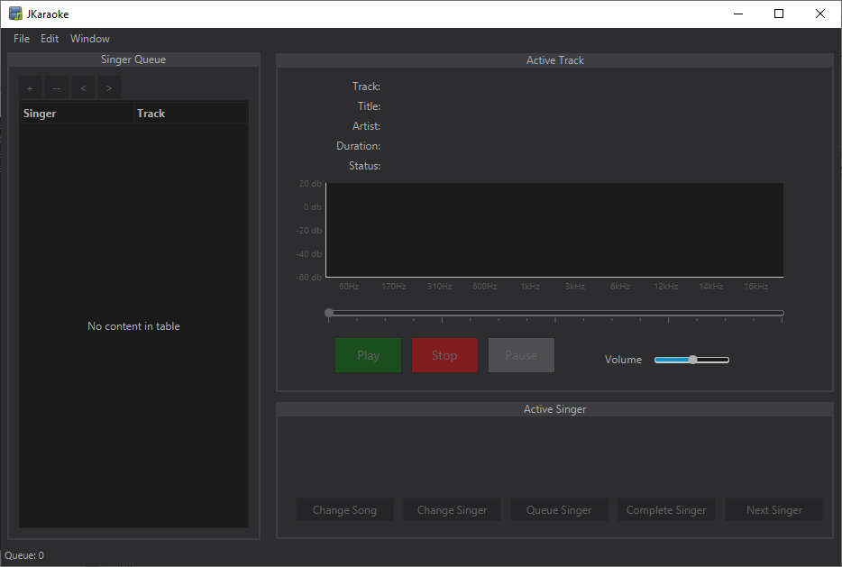
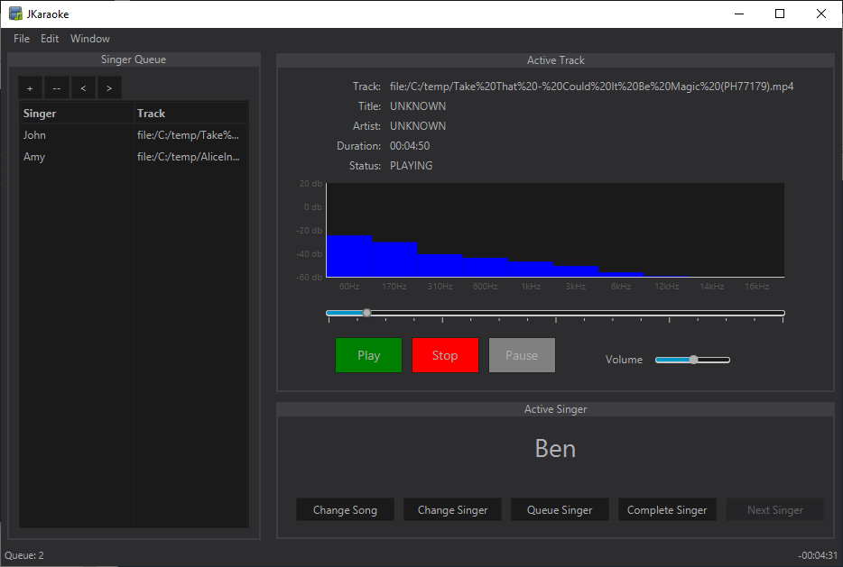

Main Interface Overview
The jKaraoke interface is designed to be intuitive, placing all critical controls at your fingertips. Below is a breakdown of the main screen components.
1. Menu Bar
Located at the top of the window, the menu bar provides access to global application functions:
- File: Create new events, open existing event files (.kev), save your current session, or close the application.
2. Information Dashboard
This section displays real-time status information:
- Current Singer: Displays the name of the person currently performing.
- Song Information: Shows the Title, Artist, and Album Artist (if available) of the playing track.
- Queue Status: Indicates the number of singers waiting in the queue.
- Time: Shows current playback time and remaining time.
3. Playback Controls
Standard media controls to manage the song:
- Play: Starts or resumes the song.
- Pause: Temporarily halts playback.
- Stop: Completely stops the song and resets the position.
- Track Slider: Scrub through the song to jump to a specific time.
- Volume Slider: Adjust the master output volume.
4. Queue Management Panel
A set of buttons dedicated to managing the flow of the karaoke night:
- Next Singer: Advances the queue to the next person.
- Complete Singer: Marks the current singer's turn as done and removes them from the active slot.
- Re-Queue Singer: Moves the current singer to the back of the line for another turn.
- Change Song: Allows you to swap the song file for the current singer.
- Change Singer: Allows you to edit the current singer's name.
5. Singer Queue Table
The central list showing upcoming performances. It displays the singer's name and their chosen song.
6. Audio Spectrum
A visual bar chart that reacts to the audio frequencies in real-time, providing visual feedback of the music playback.
Playback View
When a song is actively playing, the interface displays real-time information and visual feedback:
